-
Warning
This is for borrowing only. Transfers must be done by a DM. If you are transferring them to a new district, a DO or Ops Support must do it.
-
1Navigate to https://xbo.xenial.com/login
-
2Click "Log In"
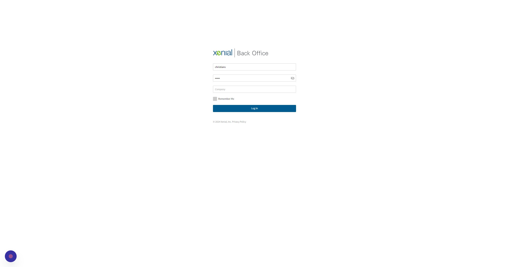
-
3Click "Employees && Scheduling"
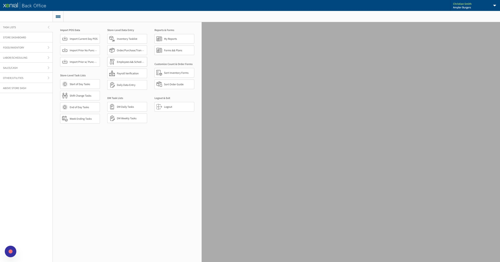
-
4Click "Add / Update Employees"
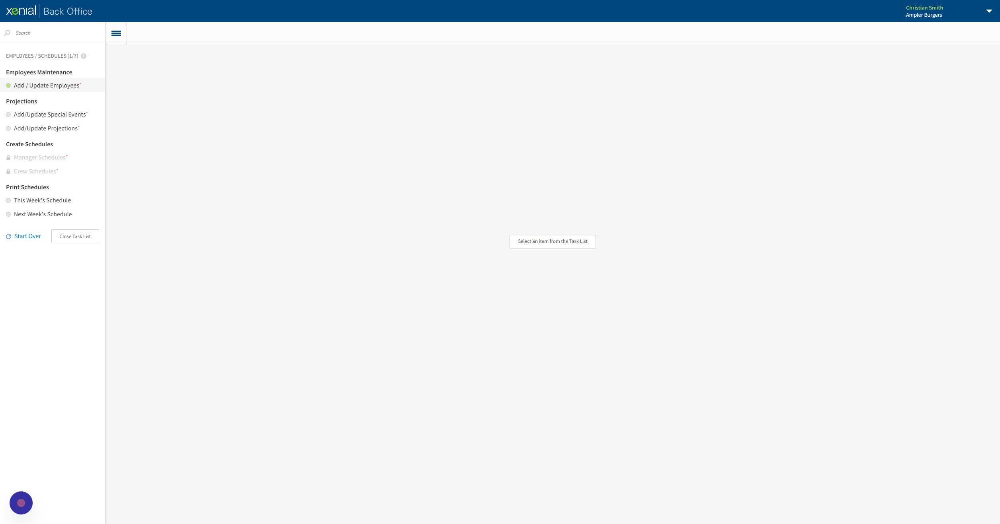
-
5Search for employee.
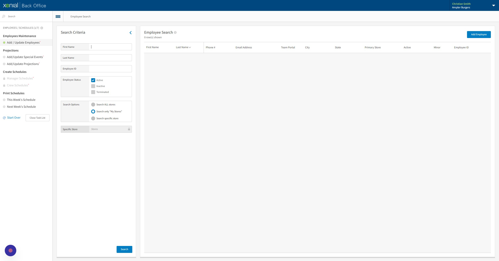
-
6Click here.
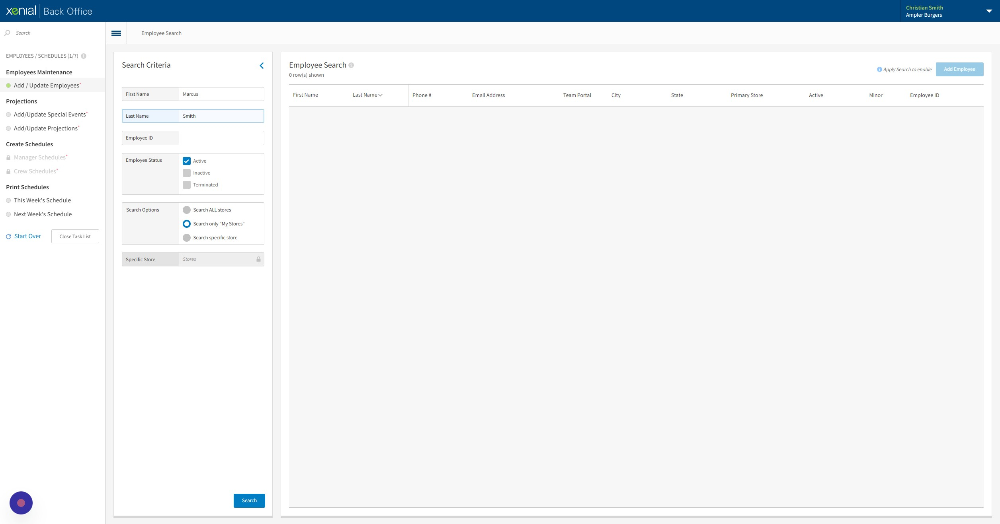
-
7Click the correct fields of their status.
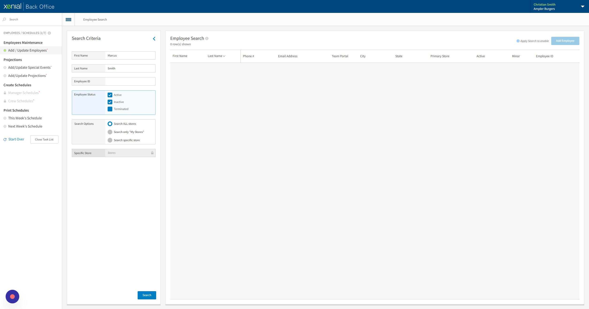
-
8Click "Search"
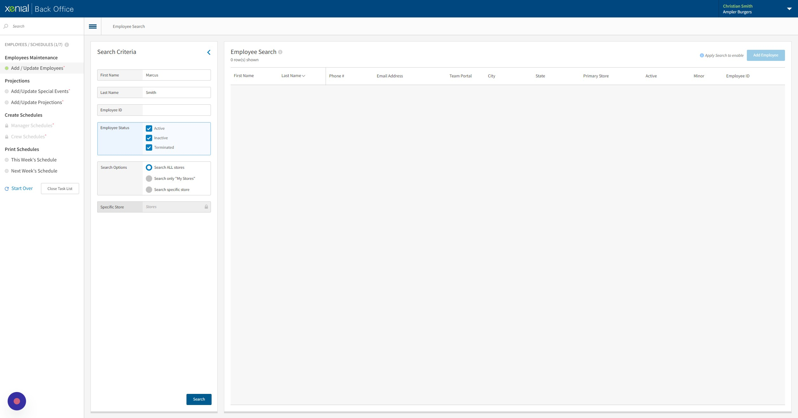
-
9Click the employee you are borrowing.
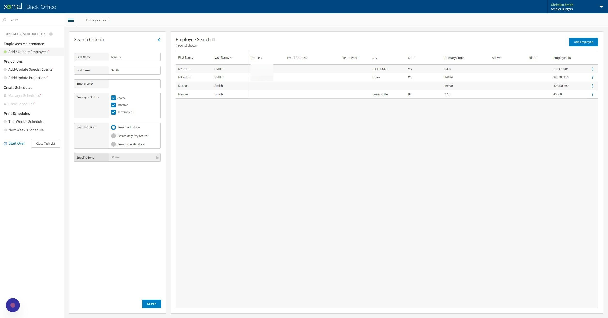
-
10Click "Stores"
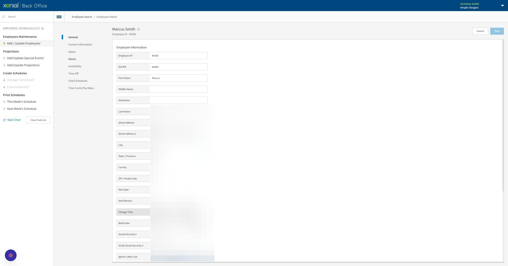
-
11Activate the store they are being borrowed to. Restaurants will only see their own restaurant.
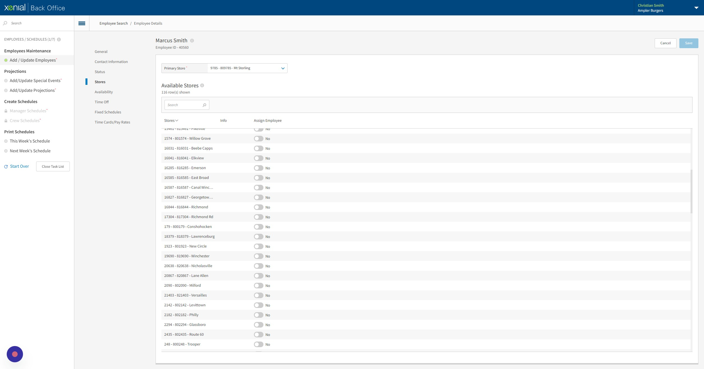
-
12Click "Time Cards/Pay Rates"
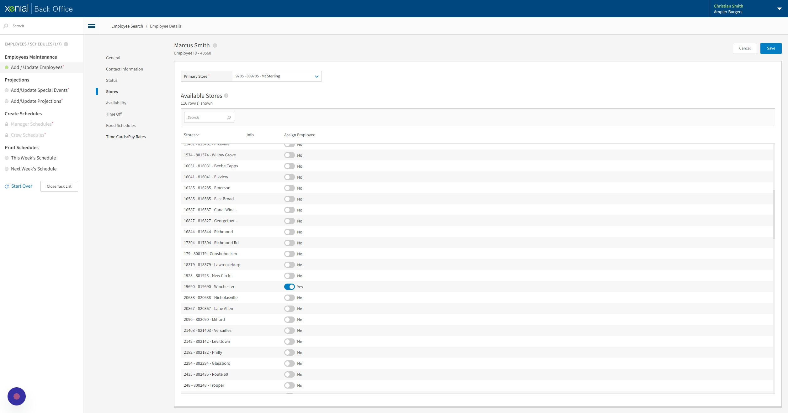
-
13Verify all the information is correct under the location they were borrowed to.
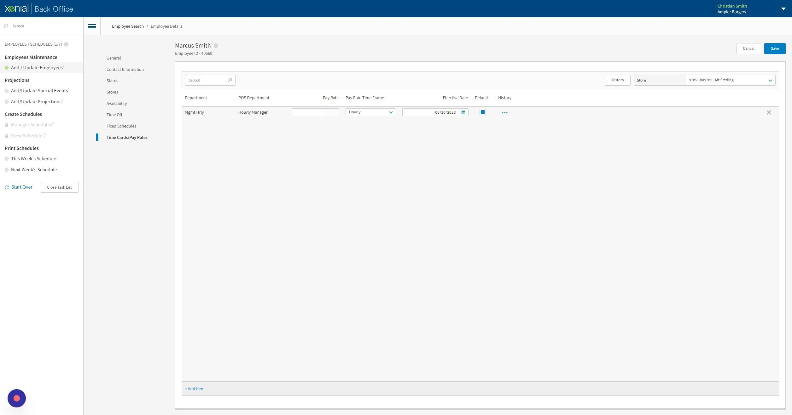